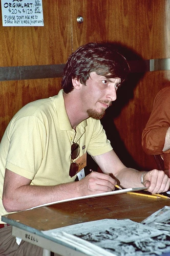
Una historia sobre caer y volver a levantarse
Daredevil: Born Again
Frank Miller y David Mazzucchelli reinventaron al Hombre sin Miedo en una de las historias más memorables del cómic estadounidense.
Descubre la obraAntecedentes
Contexto de la obra
La transformación de Daredevil
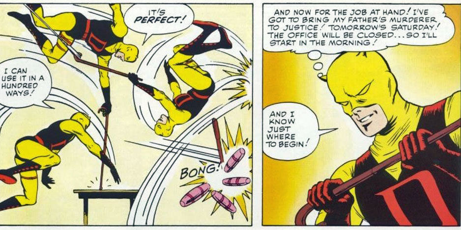
Frank Miller se dio a conocer al gran público en la serie de Marvel Daredevil. La colección del diablo de la cocina del infierno, un personaje de segunda fila creado por Stan Lee y Bill Everett en 1962, agonizaba por falta de ventas a finales de los 70. Pese a haber disfrutado del trabajo de autores de reconocida fiabilidad como Lee, Roy Thomas, Gerry Conway, Steve Gerber, Gene Colan o Bob Brown, Daredevil no conseguía deshacerse de su imagen de Spider-Man de baratillo y su periodicidad bimestral era muestra de que se hallaba al borde de la cancelación.
Y en esas que llegó Miller…
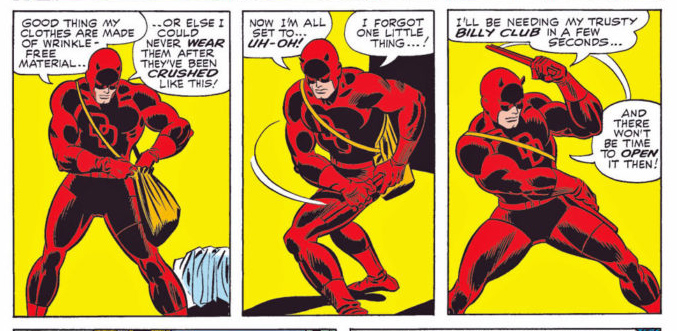
Ilustrando los guiones de un eficaz Roger Mckenzie, Miller empezó a cambiar la estética y la narrativa de la colección, pero fue su ascenso a autor completo lo que cambió el panorama por completo. A partir del número 168, publicado a finales de 1980, eclosiona un autor nuevo, distinto, fresco y rompedor, que renovaría por completo al personaje y establecería las bases de la que iba a ser la mejor década del comic de superhéroes. Aprovechando la absoluta libertad que le dio el editor Denny O’Neil (total, la colección estaba al borde de la cancelación), Miller desplegó toda su imaginación y las influencias narrativas adquiridas de las obras de Will Eisner, el manga y el cine japonés creando un cómic diferente a cualquier otra cosa que se hubiera hecho en el género pijamero. Pocas veces un autor ha marcado tanto a un personaje como en el caso que nos ocupa. No es ninguna exageración decir que Daredevil era un personaje cuando cayó en las manos de Frank Miller y se convirtió en otro totalmente distinto. Para siempre.
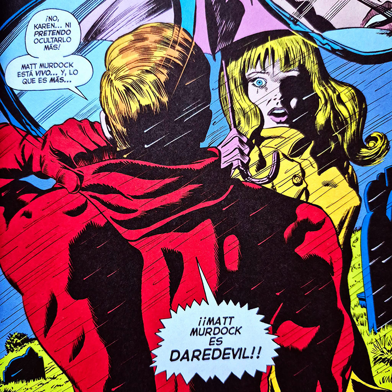
Extenuado por el ritmo de una entrega mensual y atraído por los cantos de sirena de DC cómics, que le ofrecía la posibilidad de desarrollar obras de duración limitada y con una calidad de reproducción sensiblemente superior, Miller abandonó Daredevil para encargarse de la renovación de Batman y de una obra totalmente nueva llamada Ronin. Mientras tanto, el diablo de la cocina del infierno quedó en manos de Denny O’Neil que, pese a desarrollar un trabajo cuanto menos estimable, no pudo en ningún caso igualar las cotas de excelencia de su predecesor. Era una batalla que tenía perdida de antemano.
No obstante, un detalle importante conviene ser tenido en cuenta: a mitad de dicha etapa, y tras varios cambios de dibujantes entre discretos y eficaces (Klaus Janson, William Johnson…), la entrada de un joven de inmenso talento llamado David Mazzuchelli pasó en un principio desapercibida por el entintado de Danny Bulanadi, pero en cuanto Mazzuchelli se hizo cargo de todo el apartado artístico, la serie alcanzó unas cotas de excelencia gráfica que no tenía desde los tiempos de Gene Colan.
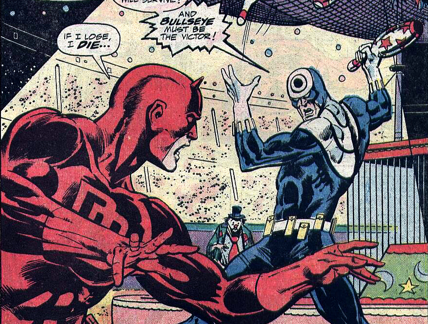
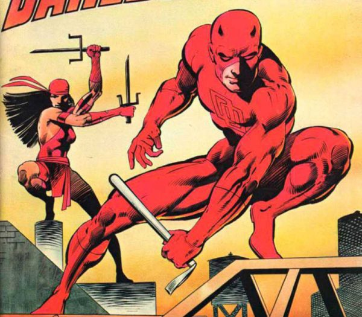
La obra
La caída de Matt Murdock
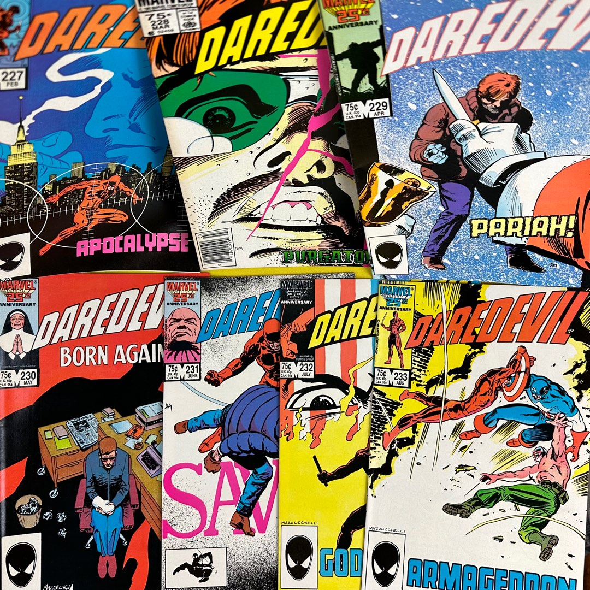
Publicada originalmente en Daredevil #227–233, en 1986, Born Again presenta a Matt Murdock en uno de los momentos más difíciles de su vida.
Cuando Kingpin descubre su identidad secreta, comienza una campaña para destruir todo aquello que Matt ha construido. La historia explora la pérdida, la resistencia y la posibilidad de empezar de nuevo.
Y en esas que volvió Miller…
Tres años después, y tras un par de números sueltos para retomar el pulso a la serie, Miller vuelve al personaje que lo convirtió en leyenda. Ya no será el autor completo ni el autor regular. Su estancia en la colección se limitará a siete números, donde desarrollará una intensa historia de caída y resurrección de Matt Murdock (el alter ego de Daredevil) para llevarlo a límites a los que jamás ningún autor había osado llevar a ningún superhéroe.
Pese a que la obra echará en falta por momentos el nervio narrativo del Miller dibujante, la excelencia gráfica de Mazzuchelli lo compensará sobradamente.
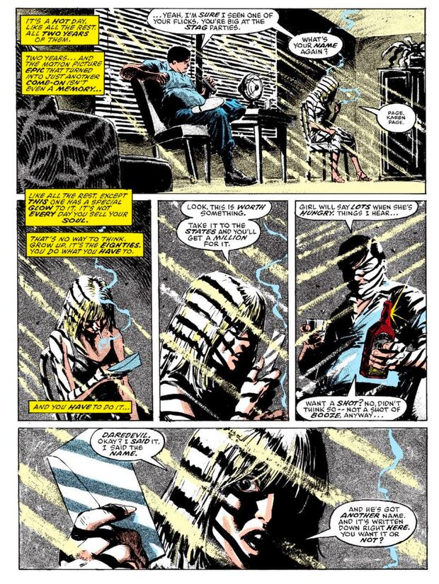
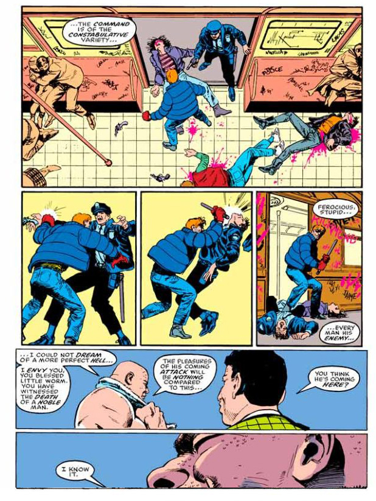
El punto de partida de la historia es tan sencillo como demoledor: Karen Page, la exsecretaria de Murdock y el primer amor que le conocimos, la cual llevaba años desaparecida, ha caído en las drogas y en el cine porno y vende su más preciada posesión, la identidad secreta de Daredevil, por una dosis. La información llega a manos de Kingpin, el rey de los bajos fondos de nueva york, que urde una compleja trama para hundir anímica y económicamente a su más odiado enemigo. Atrapado en la telaraña urdida por Kingpin, Murdock perderá su licencia para ejercer la abogacía, su casa y sus amigos, quedando al borde de la locura.
La narración en primera persona queda limitada a Murdock y a Ben Urich, un periodista que averiguó su identidad secreta en el pasado, pero que decidió guardar el secreto. El resto de personajes, tanto Kingpin como los más cercanos a Daredevil, quedan relegados a una narración en tercera persona.
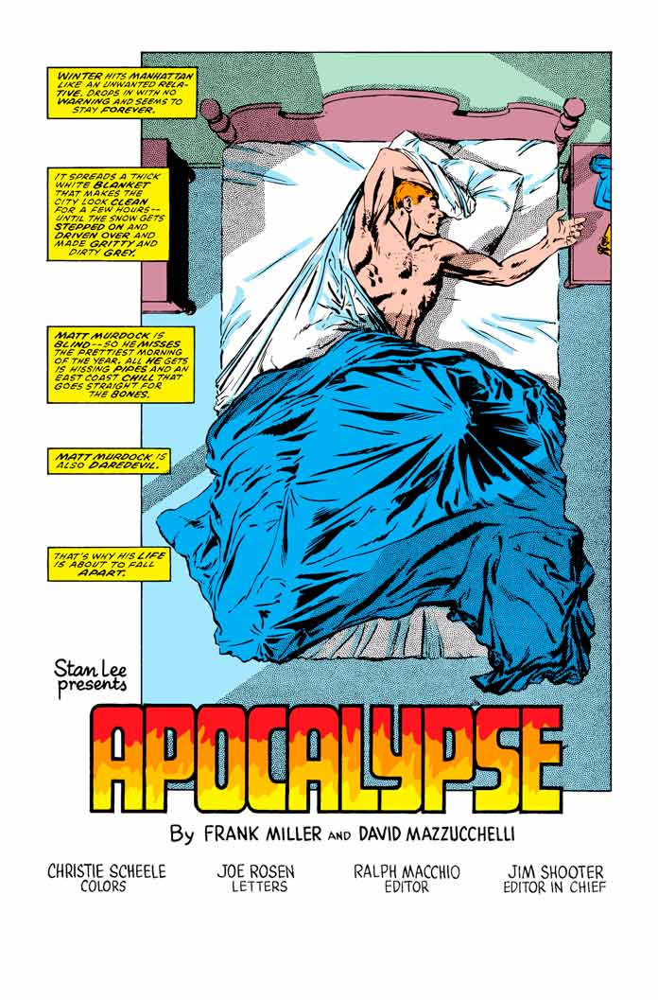
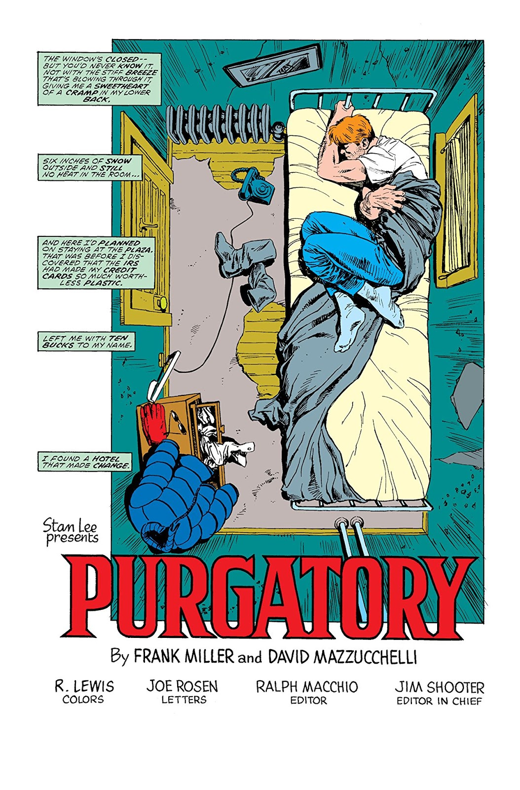
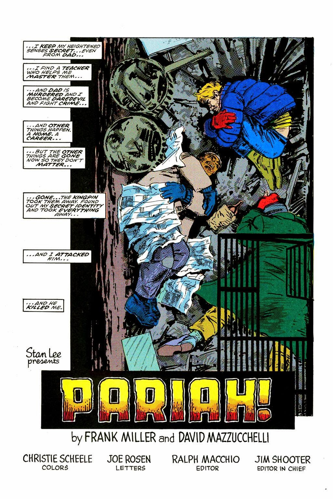
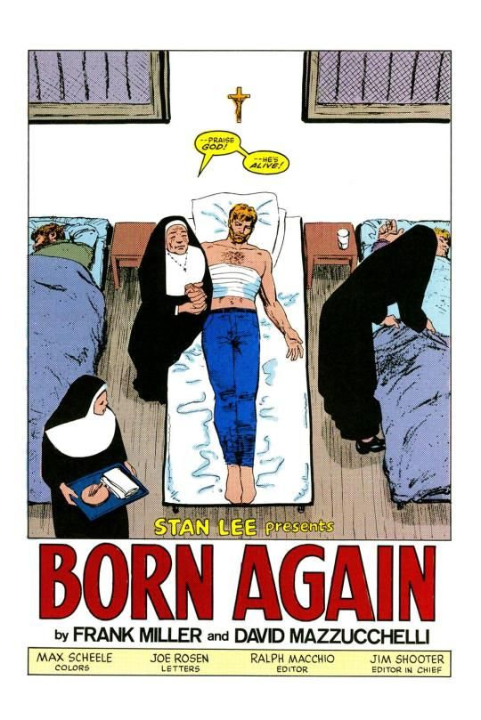
El inicio de los cuatro primeros capítulos de Born Again nos muestra a un Murdock durmiendo en un progresivo proceso de degradación. Las referencias bíblicas serán constantes, desde una página completa homenajeando a la Pietà de Miguel Ángel a un Ben Urich negando hasta tres veces a Matt Murdock (San Pedro), pasando por el descubrimiento de que la madre de Murdock sigue viva y es una monja. Es, en definitiva, el mito de la caída y resurrección encarnado en esta ocasión por un personaje que no parecía llamado a protagonizar una obra maestra de este calado… pero que tuvo la fortuna de caer en las manos de Frank Miller en el momento indicado.
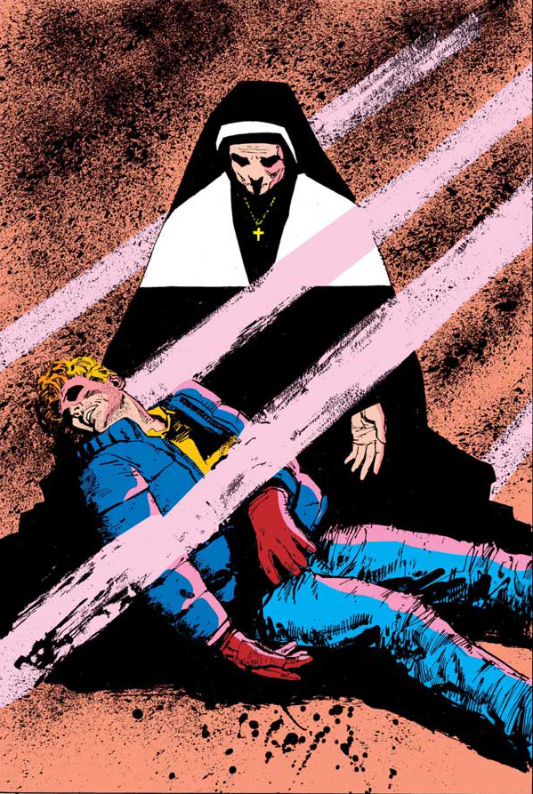
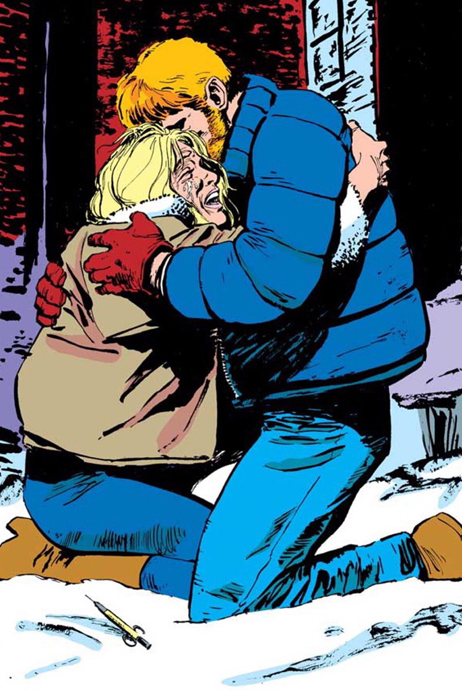
Born Again es uno de los mejores cómics Marvel de la historia, mucha gente lo considera el mejor, y sin duda uno de los pocos cómics de superhéroes que han trascendido a su género. A pesar de la brillante trayectoria de sus autores, muchos consideramos que esta caída y resurrección de Matt Murdock fue el punto álgido de sus respectivas carreras.
Un clásico imprescindible.
Historia editorial
Ediciones españolas
Desde su publicación original en Estados Unidos, Daredevil: Born Again ha conocido distintas ediciones en España. Este apartado repasa su trayectoria editorial, sus formatos y las particularidades de cada publicación.
Mi recomendación
Mucho más que una historia de superhéroes
Born Again destaca por la profundidad de sus personajes, la intensidad de su relato y la perfecta integración entre guion y dibujo.
Es una lectura especialmente recomendable para quienes buscan historias de superhéroes con una dimensión humana, dramática y adulta.